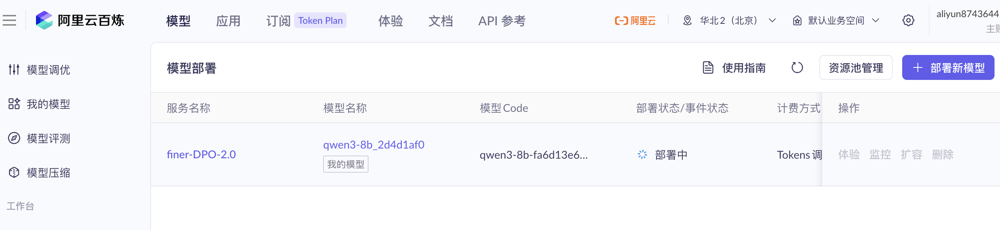
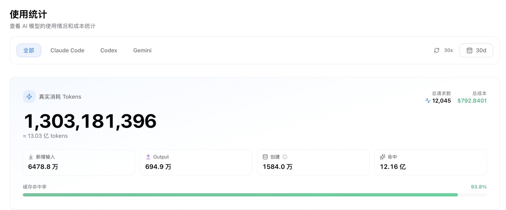

模型训练 · 对齐与可验证奖励
Finer：给投研 agent 的每个结论，
挂上证据、回测与可验证奖励
Finer 是我独立搭建的一条多 agent 投研流水线（F0–F8）：把多模态 KOL 内容转成结构化的投资意图与交易动作，全链路证据绑定、可回测。它已经是一个可访问的线上系统与开源仓库；对齐部分我设计了 RLHF(DPO) + RLVR 方案——把"判断要可被验证"直接写进训练目标。
01 · 系统
一条证据可溯、可回测的多 agent 流水线
Finer 的设计原则是：agent 给出的每一条结论，都要能回溯到它所依据的原始证据，并接受回测检验——而不是让模型凭印象下判断。
F0–F8 流水线
- 从多模态 KOL 内容，到结构化的投资意图 / 交易动作的分阶段流水线。
- 每个抽取结论绑定证据来源，可逐条回溯到原文。
- 结论可回测，形成"产出—检验"的闭环。
线上与开源
- 线上宣传站：finer.t800.click。
- 开源仓库：github.com/…/finer。
- 配套 Multi-Agent-OS 多 agent 编码方法框架，支撑高强度、可溯的产出。

把标注系统截图存为 img/finer_os_annotation.png
图 1 · 自研标注工作台 Finer OS：结构化抽取 → 人工偏好标注 → 质量门清洗入库
02 · 对齐方案
RLHF(DPO) + RLVR：把"可验证"写进奖励
对齐由两部分组成：用人类偏好做 DPO，同时设计一个确定性的"可验证奖励"（RLVR），只奖励忠实回溯证据的抽取，而不奖励对市场涨跌的预测。
确定性规则 verifier（输入仅 evidence_text + output）：
total = 结构门（硬门，破门=0） × ( 0.50·grounding + 0.40·calibration + 0.10·abstention )
grounding=标的/目标价逐字回溯原文；calibration=置信度匹配证据强度；abstention=证据不足时弃权才给分。奖励不看回测 / 行情 / 未来收益。
total = 结构门（硬门，破门=0） × ( 0.50·grounding + 0.40·calibration + 0.10·abstention )
grounding=标的/目标价逐字回溯原文；calibration=置信度匹配证据强度；abstention=证据不足时弃权才给分。奖励不看回测 / 行情 / 未来收益。
RLVR 奖励设计 已实现
偏好数据 100 条 已就绪
真值基准 31 条 已就绪
第一轮 DPO-LoRA 完成
66.7 → 22.2%
编造率（越低越好）
33.3 → 77.8%
证据挂靠率（越高越好）
87.1%
偏好胜率 · 胜13/平14/负2
100 → 100%
结构合规率
口径 · 第一轮 DPO 微调前（基座 Qwen3-8B）vs 后，held-out eval n=29、judge=ref，训练用 20 条 registry-验证精选偏好对。这是第一轮、小样本的方向验证，非最终模型水平——after 仅 2 负、约半数进步。来源 scripts/eval_compare.py。另：committal 49%→18% 为"剔脏数据致偏好塌缩"的警示性数据发现，非正面成果。

把百炼模型部署截图存为 img/finer_dpo_deploy.png
图 2 · DPO 微调模型在阿里云百炼上的部署（finer-DPO · Qwen3-8B）
03 · 真实 agent 编排用量
高强度、可溯的 agent 实操
支撑上述系统与作品集的，是大量真实的 agent 编排实操。下面是跨 Claude Code / Codex / Gemini 的累计用量，可视为"高强度真实 agent 编排经验"的一个客观侧写（非绑定单一项目）。

图 3 · 跨 Claude Code / Codex / Gemini 的累计 token 与请求用量（真实后台统计）
13.03 亿
累计 tokens（1,303,181,396）
12,045
总请求数
93.6 %
缓存命中率
$792.84
累计成本